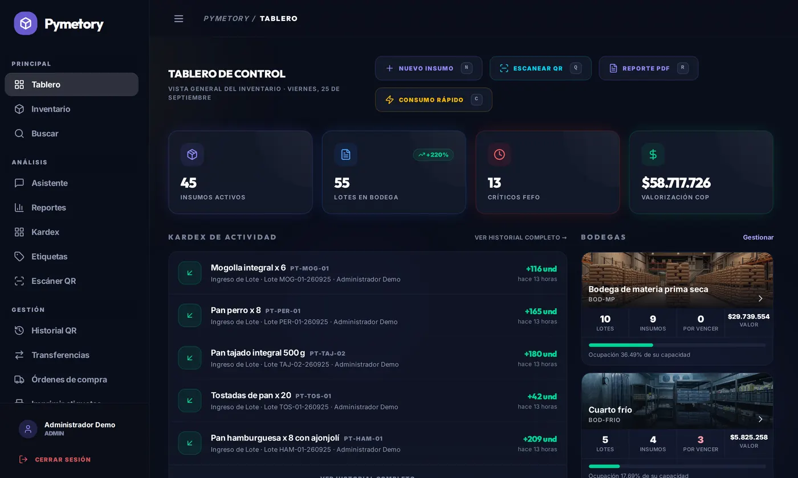
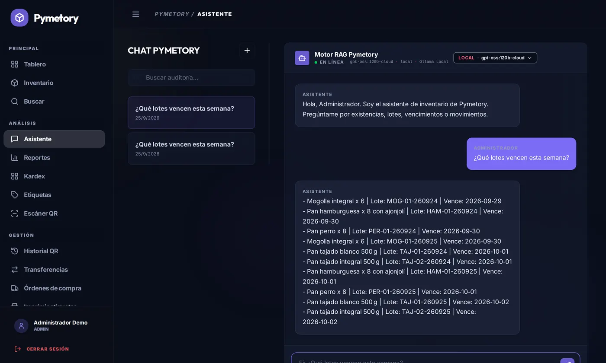
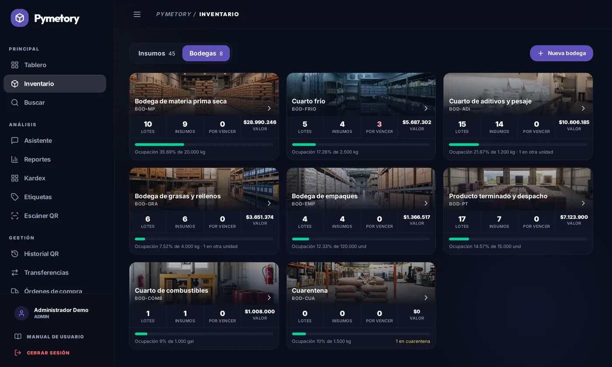
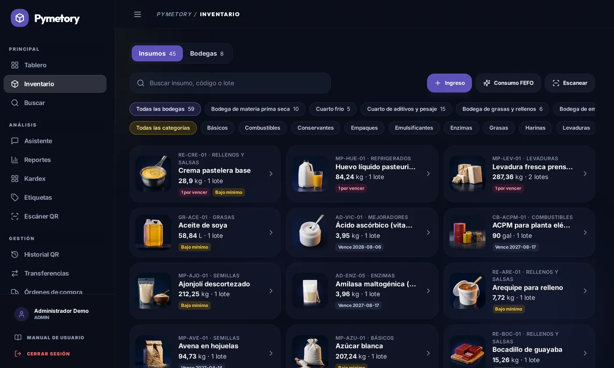
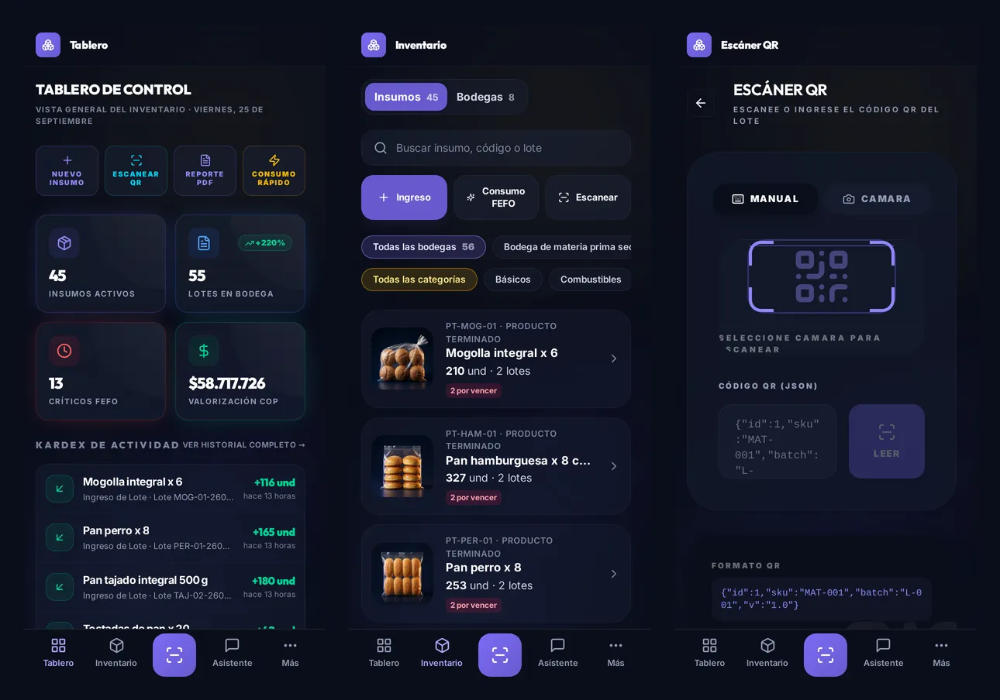

Sale primero lo que vence primero
Cada consumo descuenta del lote con la fecha de vencimiento más cercana, aunque atraviese varios lotes.
Trabajo de grado · Ingeniería de Sistemas
Pymetory es un sistema web para que una PYME sepa qué tiene en bodega, despache primero lo que vence primero y pueda preguntar por su inventario en español. El caso de estudio es una panificadora del Valle del Cauca.
Las fijó la dirección del trabajo de grado y el sistema las hace cumplir en el código y en la base de datos, no solo en la interfaz.
Cada consumo descuenta del lote con la fecha de vencimiento más cercana, aunque atraviese varios lotes.
Cada movimiento guarda usuario, fecha y motivo. Editarlo o eliminarlo se rechaza en el modelo y en las llaves de la base de datos.
Administrador y operario. Usuarios, claves de API, reportes y ajustes son solo del administrador.
Antes de llamar al modelo de lenguaje se consultan los lotes, movimientos y bodegas que pide la pregunta.
Capturas de app.pymetory.com con los datos de demostración de la panadería (25 de septiembre de 2026).





Los capítulos 1 a 7 vienen del anteproyecto; del 8 en adelante documentan lo construido. Formato de la tesis de referencia y citación IEEE.
Lo que está hecho y lo que falta, con el mismo criterio del capítulo de conclusiones.
| Objetivo | Evidencia | Estado |
|---|---|---|
| 1. Entender las necesidades de una PYME | Entrevista de levantamiento con la administradora; problema real: el inventario contable no coincide con la bodega. | Cumplido |
| 2. Diseñar el sistema | Arquitectura, herramientas justificadas, modelo de datos y prototipo en Figma. | Cumplido |
| 3. Implementar y desplegar | Aplicación en producción con FEFO, Kardex inmutable, roles, asistente, reportes en PDF y Excel, reabastecimiento con punto de reorden, etiquetas QR y bodegas. | Cumplido |
| 4. Verificar el sistema | 128 pruebas PHPUnit y 61 de extremo a extremo; asistente con 48 de 50 consultas correctas (9 de 10 en la prueba ciega); evaluación heurística y WCAG 2.1 AA sin incumplimientos automáticos. Falta la prueba con usuario. | Parcial |